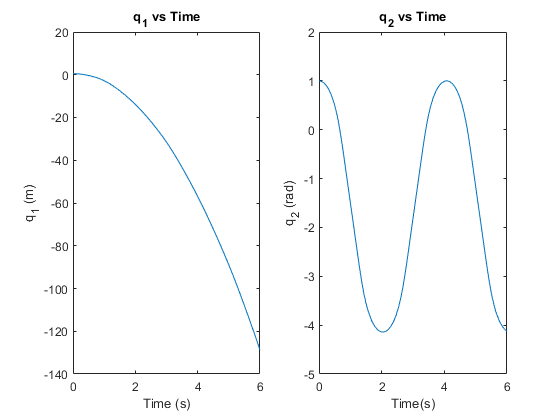
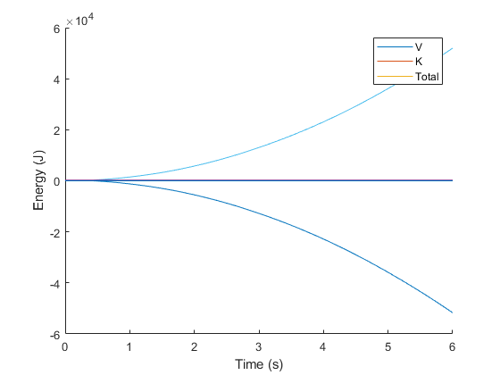

Contents
2
clc,clear,close all
[t,y] = ode23(@twoLinkODE_HW9,[0 6],[.5 1 0 0]');
figure
subplot(1,2,1)
plot(t,y(:,1))
xlabel('Time (s)')
ylabel('q_1 (m)')
title('q_1 vs Time')
subplot(1,2,2)
plot(t,y(:,2))
xlabel('Time(s)')
ylabel('q_2 (rad)')
title('q_2 vs Time')

3a) Energy
K = zeros(length(t));
V = zeros(length(t));
for i=1:length(t)
[dy,K(i),V(i)] = twoLinkODE_HW9(t(i),y(i,:)');
end
figure
hold on
plot(t,V)
plot(t,K)
plot(t,K+V)
xlabel('Time (s)')
ylabel('Energy (J)')
hold off
legend('V','K','Total')

3b)
fprintf('I believe this is correct because without any joint limits or friction, the joints would in fact either rotate for infinity or accelerate downward into infinity if it is prismatic.\nThis behavior also checks out because the Total energy stays constant at 0 as kinetic goes into inifinity and potential goes into negative infinity.')
I believe this is correct because without any joint limits or friction, the joints would in fact either rotate for infinity or accelerate downward into infinity if it is prismatic.
This behavior also checks out because the Total energy stays constant at 0 as kinetic goes into inifinity and potential goes into negative infinity.